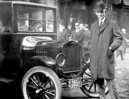

La Segunda Revolución Industrial (también conocida como la Revolución Industrial 2.0) fue un período de profundos cambios económicos, tecnológicos y sociales que tuvo lugar aproximadamente entre 1870 y 1914, aunque sus efectos se extendieron hasta principios del siglo XX. Esta etapa se distinguió de la Primera Revolución Industrial por una serie de innovaciones tecnológicas que transformaron aún más las estructuras de producción, transporte y comunicación.
Nuevas fuentes de energía: Durante la Segunda Revolución Industrial, la electricidad, el petróleo y el gas se convirtieron en fuentes clave de energía. Esto permitió avances en la industria, en el transporte y en la vida cotidiana.
Innovaciones tecnológicas: Se desarrollaron nuevas máquinas y procesos industriales, como el motor de combustión interna, el motor eléctrico y el proceso Bessemer para la producción de acero, que permitió fabricar materiales más fuertes y baratos.
Expansión del ferrocarril y del telégrafo: La infraestructura de transporte y comunicación mejoró enormemente, lo que facilitó el comercio y la globalización. Los ferrocarriles se expandieron por todo el mundo, y el telégrafo permitió la comunicación instantánea a largas distancias.
Desarrollo de nuevas industrias: Aparecieron nuevas industrias clave como la química, la eléctrica y la automotriz, que jugaron un papel fundamental en la modernización de las economías.